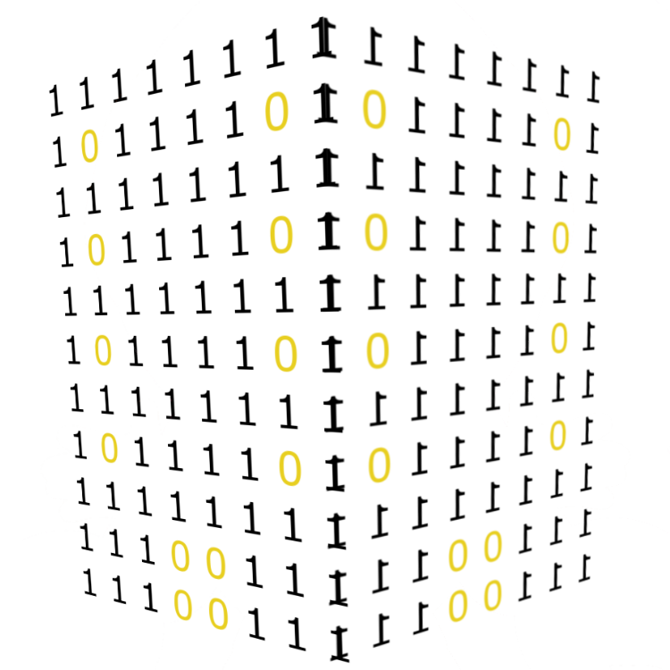
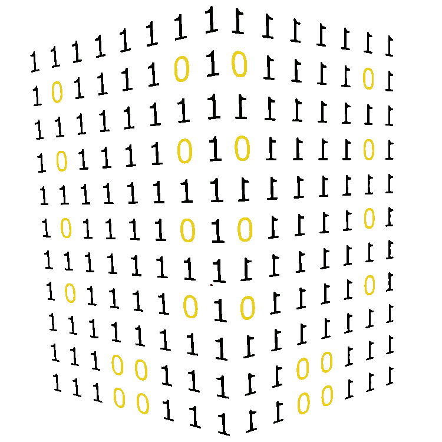

Your building, by the numbers.

We build a calibrated model of your building from the data you already have and, when you're ready, tune it with on-site measurement. Use it to run the building day to day, understand your regulatory risk, and plan capital work.
or call 845-764-0243
Most energy analysis is estimated from default tables: typical efficiencies, typical U‑values, typical schedules. We measure. Equipment under real operating conditions, the building's own sensors and meters, and the envelope where it matters all go into a physics model of your site.
The numbers that come out describe the building that's actually there. Use them to tune operations and to plan capital work.
Start with what you have: utility bills, interval data, drawings, audits, spec sheets. The engine turns that pile into a structured, calibrated model of your building.
The model flags what it's unsure of and asks the questions that would change the answer.

It looks like you have single‑pane windows. Is that right?
Estimated window U‑value — right where single glazing lives.
We're also seeing signs of low ΔT syndrome. How clean are your coils?
Modeled chilled‑water supply vs. return — only ~8°F apart.
We need more data to be sure.
Add it to the next site visit →Then we measure. Quarterly site visits and the data loggers we install replace assumptions with readings, and the model tunes itself to the building.
The model turns what it knows into decisions: what to do, what it costs, what it saves, which incentives apply, and when it pays back.
You're a strong candidate for vacuum insulated glass.
Illustrative figures.
Learn more →Low ΔT syndrome confirmed. Based on your answers, energy valves are worth a look.
Explore →Both give you a calibrated model of your building. Rational builds it from the data you already have; Real adds quarterly measurement and real-time data.
$3,000 / site / year
Your building's numbers from what you already have. No hardware, no site visit.
We work with the utility data and documents you already have to stand up our decision engine and energy-management system, built on a calibrated model of your site.
Self-serve. Share, export, or schedule any report.
$12,000 / site / year
Everything in Rational, plus the building measured on a regular cadence.
A quarterly on-site engagement and real-time logger data tune the model to the building itself.
Year one prepaid with a 24-month commitment.
Unusual buildings, portfolios, or projects that don't fit the standard engagement. Scoped to the job.
Model outputs are estimates for planning. We don't file benchmarking or compliance submissions on your behalf, and we don't guarantee savings, incentive awards, or compliance outcomes.
Our principles are simple: work with what you have, and measure what matters.
Software should reflect the building as it actually is.
It also shouldn't take your time or attention. Reports can be shared, exported, and scheduled, and you can ask the model questions in plain language. Every interaction is guided by a core question: